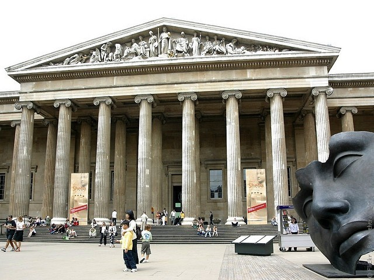
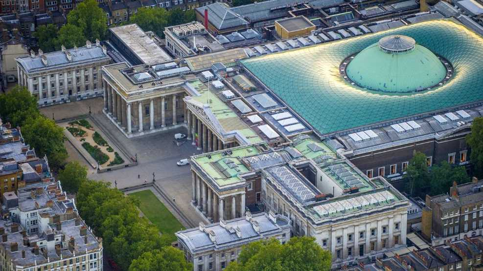
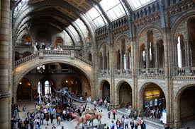
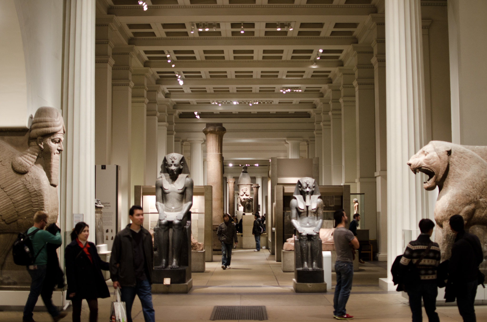
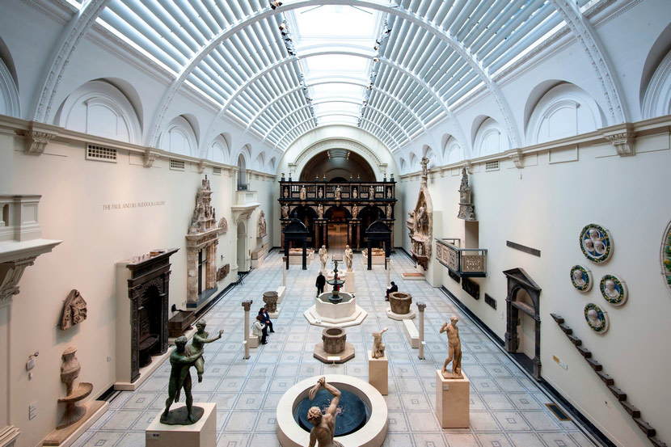
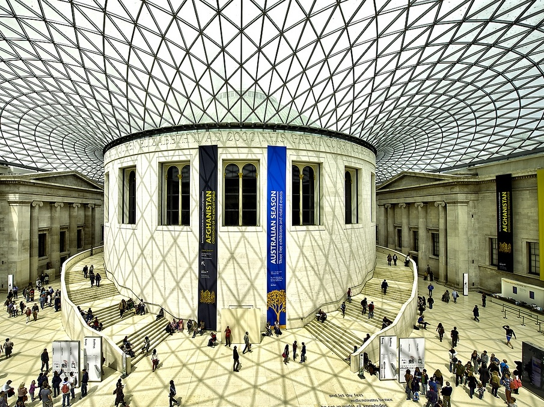

Britaniya muzeyi: Insoniyat tarixining global xazinasi
Britaniya muzeyi (inglizcha The British Museum) — dunyodagi eng mashhur va eng nufuzli muzeylardan biri bo‘lib, Buyuk Britaniyaning poytaxti London shahrida joylashgan. Ushbu muzey insoniyat tarixiga, madaniyatiga va san’atiga oid betakror eksponatlarni o‘zida jamlagan. Britaniya muzeyi o‘zining boy kolleksiyasi, bepul kirish imkoniyati va ilmiy ahamiyati bilan butun dunyodan kelgan millionlab mehmonlarni o‘ziga jalb etadi.
Muzeyning tashkil topishi
Britaniya muzeyi 1753-yilda tashkil etilgan va 1759-yilda omma uchun rasman ochilgan. Bu muzey dunyodagi ilk milliy va ommaviy muzeylardan biri hisoblanadi. Uning tashkil etilishiga asos bo‘lgan shaxs — ingliz shifokori va kolleksioneri Sir Hans Sloanedir. U umr davomida minglab kitoblar, qo‘lyozmalar, tabiiy namunalar va san’at buyumlarini to‘plagan hamda vafotidan so‘ng bu kolleksiyani davlatga hadya qilgan. Dastlab muzey Montagu House nomli binoda joylashgan bo‘lsa, keyinchalik kolleksiyalar kengayib borgani sari hozirgi joyiga — Bloomsbury hududiga ko‘chirildi. Bugungi kunda Britaniya muzeyi dunyo madaniy merosining eng muhim markazlaridan biri sanaladi.
Me’morchiligi va Buyuk hovli
Britaniya muzeyi me’morchiligi klassik uslubda qurilgan bo‘lib, uning old qismi yunon ibodatxonalarini eslatadi. Muzey binosi ustunlar, keng zinapoyalar va muhtasham fasadi bilan ajralib turadi. Bino XIX asrda me’mor Sir Robert Smirke tomonidan loyihalashtirilgan. Muzeyning eng mashhur qismi — Buyuk hovli (Great Court) hisoblanadi. U Yevropadagi eng katta yopiq hovlilardan biri bo‘lib, shisha tom bilan yopilgan. Hovli markazida ilgari Britaniya kutubxonasi joylashgan bo‘lib, bugungi kunda u o‘quvchilar va mehmonlar uchun ochiq, yorug‘ va zamonaviy makonga aylangan.
Britaniya muzeyi bo‘limlari
Britaniya muzeyida 8 milliondan ortiq eksponat mavjud bo‘lib, ularning barchasi insoniyat tarixining turli davrlarini qamrab oladi. Muzey bir nechta asosiy bo‘limlarga bo‘lingan:
- Qadimgi Misr va Sudan san’ati
- Qadimgi Yunon va Rim madaniyati
- Osiyo san’ati (Xitoy, Hindiston, Yaponiya va boshqalar)
- Yaqin Sharq va Mesopotamiya madaniyati
- Afrika, Okeaniya va Amerika xalqlari madaniyati
- Tangalar va medallar bo‘limi
- Bosma asarlar va chizmalar
Bu bo‘limlar orqali tashrif buyuruvchilar qadimgi sivilizatsiyalardan tortib zamonaviy davrgacha bo‘lgan tarixiy jarayonlarni kuzatish imkoniga ega bo‘ladilar.
Eng mashhur eksponatlar
Britaniya muzeyi dunyoga mashhur ko‘plab noyob asarlar bilan tanilgan. Ulardan eng mashhurlari quyidagilardir:
- Rozetta toshi — qadimgi Misr yozuvlarini o‘qishda muhim rol o‘ynagan noyob tosh. Aynan shu topilma iyerogliflarni tushunishga yo‘l ochgan.
- Qadimgi Misr mumiyalari — fir’avnlar va zodagonlarga oid mumiyalangan jasadlar.
- Assuriya relyeflari — Nineviya va Nimrud saroylaridan topilgan yirik tosh o‘ymakorlik asarlari.
- Lyuis shaxmat donalari — o‘rta asrlarga oid, fil suyagidan yasalgan mashhur shaxmat to‘plami.
Bu eksponatlar muzeyning ilmiy va tarixiy qiymatini yanada oshiradi.
Britaniya muzeyi va bahsli masalalar
Britaniya muzeyi ba’zi eksponatlarning kelib chiqishi sababli bahs-munozaralarga ham sabab bo‘lgan. Ayrim davlatlar o‘z tarixiy boyliklarini qaytarishni talab qilib kelmoqda. Masalan, Gretsiya Parfenon marmarlarini, Misr esa ayrim qadimiy buyumlarni qaytarishni so‘rab keladi. Muzey esa bu asarlar butun insoniyatga tegishli ekanini va ularni saqlash, o‘rganish hamda namoyish etish global ahamiyatga ega ekanini ta’kidlaydi. Ushbu masala hanuzgacha xalqaro miqyosda muhokama qilinib kelinmoqda.
Ta’lim va ilmiy faoliyat

Britaniya muzeyi nafaqat ko‘rgazma markazi, balki yirik ilmiy va ta’lim muassasasi hamdir. Muzey olimlar uchun tadqiqotlar olib borish imkoniyatini yaratadi, maktab o‘quvchilari va talabalar uchun maxsus ta’lim dasturlarini tashkil etadi. Shuningdek, muzey raqamli platformalar orqali ham faoliyat yuritib, ko‘plab eksponatlarni onlayn tarzda tomosha qilish imkonini beradi. Bu esa Britaniya muzeyini butun dunyo uchun ochiq ilmiy markazga aylantiradi.
Britaniya muzeyi — bu faqat Buyuk Britaniyaning emas, balki butun insoniyatning umumiy madaniy merosi hisoblanadi. Uning zallarida qadimiy sivilizatsiyalar tarixi, san’at va ilm-fan taraqqiyoti mujassam. Har bir eksponat o‘z davrining ovozi, o‘tmishdan bizga yetib kelgan bebaho xotiradir. Britaniya muzeyiga tashrif buyurish — bu dunyo bo‘ylab tarixiy sayohat qilish, turli xalqlar madaniyati bilan yaqindan tanishish va insoniyat taraqqiyotini chuqurroq anglash imkonidir. Shu sababli u dunyoning eng muhim muzeylaridan biri sifatida e’tirof etiladi.